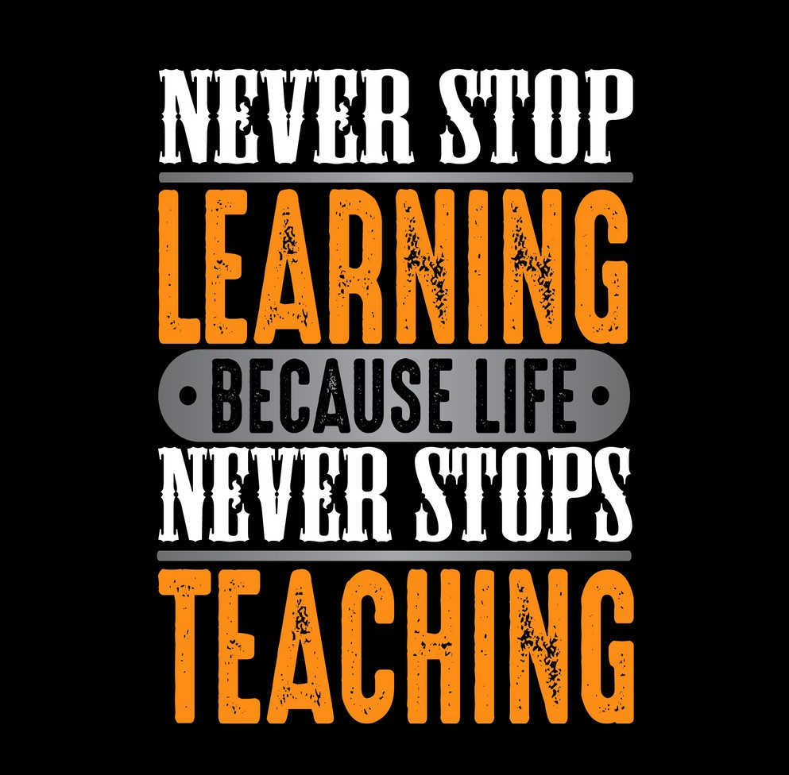

Practice Exercises
why? Because "I want to express my feelings openly and confidently whith my natural character".
Find your why.
why?Beacause “Highly motivated people start with their WHY. WHY do you do what you do?”.
Feel what you feel....
Why? Because “When disappointing or upsetting things happen, some people get overwhelmed with negative emotions, while others try to avoid those feelings all together,”.
Get your morning started on the right foot....
Why?Beacause "One of the easiest and most powerful habits that drive motivation is kicking off your day correctly by having a morning routine".
Change it up....
Why?Because "There’s an old saying: variety is the spice of life. Variety keeps your motivated to meet goals when you haven’t yet made much progress
and risk falling into a rut".

Chart your progress...
Why?Beacause "This is a simple way for you to see how far you’ve come along. Sounds simple, but think about when you set a reading goal".
Create environmental anchors....
Why?Because "This is simply writing your goals or inspiring quotes on a Post-it or 3x5 card and placing it on the wall of your office,
the inside of your car, bathroom mirror or calendar.A daily reminder of your goal will push you to accomplish it".
Join a group, online or offline....
Why?Because "Self-motivation is tough. Think about going to the gym by yourself or when you tried to quit smoking.
It was probably a whole lot easier when you had a partner in crime so that you could push each other".
Develop gratitude.
Why?Because "Just by identifying the one thing every day that you’re grateful for is powerful enough in helping your achieve both mini-goals
and your big goals since it develops the ability to look for a daily opportunity that you can grow from".